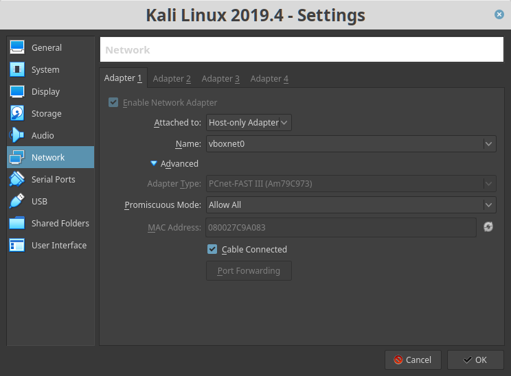

Five86 2
▸ Five86 2
▸ 1. Scan Network
▸ 2. Finding Services and Ports
▸ 3. Enumeration
▸ 3.1 Port 80
▸ 3.2 Wpscan
▸ 3.2.1 Log in Wordpress
▸ 3.2.2 Getting a php reverse shell
▸ 3.2.3 Create a Simple php oneliner reverse shell
▸ 3.3 Netcat
▸ 3.4 Post-enumeration
▸ 5. Privilege Escalation
▸ 5.1 Inspet traffic
▸ 5.2 Switch to "root"
▸ 5.3 Get the flag
Difficulty: Begginer
Flag: 1 flag.
Learning: Network scanning | Enumeration | Wpscan | Netcat | Privilege Escalation
Download (Mirror): https://download.vulnhub.com/five86/Five86-2.zip
Download (Torrent): https://download.vulnhub.com/five86/Five86-2.zip.torrent
Install the machine on VirtualBox:
1. Download the file and extract it.
2. On Virtualbox choose File->Import Appliance.
3. Select the file “ova”.
4. Accept to import.
Virtual Machine Network Settings

Watch your Machine IP.

Diagram
 Index
Index